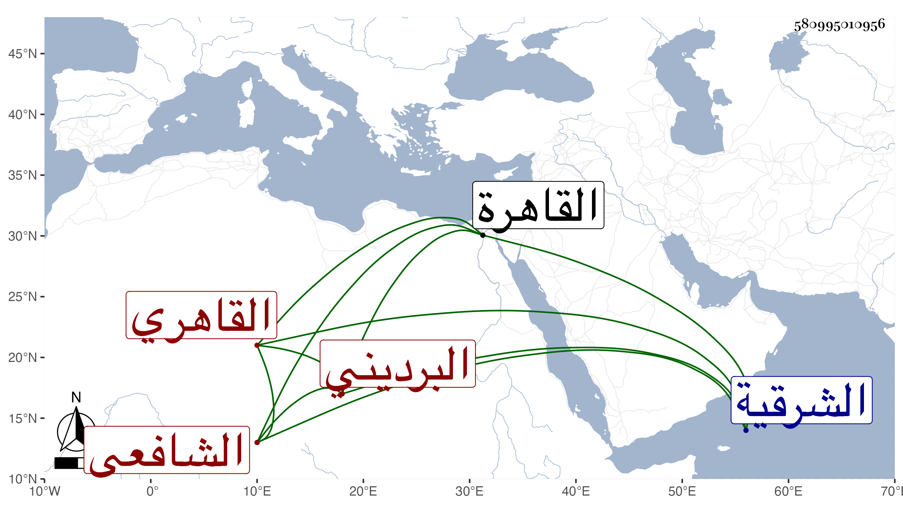

0902Sakhawi.DawLamic.ITO20230111-ara1.EIS1600.580995010956
Biography ID: 580995010956
384
الحسن بن أحمد بن محمد البدر البرديني ثم القاهري الشافعي ولد بقرية بردين من الشرقية في حدود الخمسين وسبعمائة ، وقال شيخنا في أنبائه إنه قدم يعني منها ونشأ بالقاهرة فقيرا ونزله أبو غالب القبطي الكاتب بمدرسته التي أنشأها بجوار باب الخوخة فقرأ على الشمس الكلائي ولم يتميز في شيء من العلوم ولكنه لما ترعرع تكسب بالشهادة ثم ولي التوقيع واشتهر به مع معرفة بالأمور الدنيوية فراج بذلك على ابن خلدون فنوه به والصدر المناوي . قلت ورأيته شهد على الصدر الابشيطي في إذنه للجمال الزيتوني بالتدريس والافتاء في سنة تسع وثمانمائة ، قال ولم ينتقل في غالب عمره عن ذلك ولا عن ركوب الحمار حتى كان بآخر دولة الجمال الاستادار فان كاتب السر فتح الله نوه به فركب حينئذ الفرس وناب في الحكم وطال لسانه واشتهر بالمروءة والعصبية فهرع إليه الناس في قضاء حوائجهم وصار عمدة القبط في مهماتهم يقوم بها أتم قيام فاشتد ركونهم إليه وخصوه بها بحيث لا يثق أحد منهم فيها بغيره فصارت له بذلك سمعة وكان يتجوه على كل من فتح الله كاتب السر وابن نصر الله ناظر الجيش بالآخر وعلى سائر الاكابر بهما فحوائجه مقضية عند الجميع ، ولما باشر نيابة الحكم أظهر العفة ولم يأخذ على الحكم شيئا فأحبه الناس وفضلوه على غيره من المهرة لذلك وحفظت عنه كلمات منكرة مثل انكاره أن يكون في الميراث خمس أو سبع لأن الله لم يذكره في كتابه وغير ذلك من الخرافات التي كان يسميها المفردات ، بل حج بأخرة فذكر لي عنه الصلاح بن نصر الله أمورا منكرة من التبرم والازدراء نسأل الله العفو وكان مع شدة جهله عريض الدعوى غير مبال بما يقول ويفعل . مات في رجب سنة احدى وثلاثين وقد زاد على الثمانين وتغير عقله وله في هدم الاماكن التي أخذها المؤيد حين بنى جامعه بباب زويلة مصائب استوعبها المقريزي في تاريخه وذكره في عقوده مطولا ، وسيأتي له ذكر في ترجمة صهره الشمس محمد بن أحمد بن يوسف بن محمد الزعيفريني .
